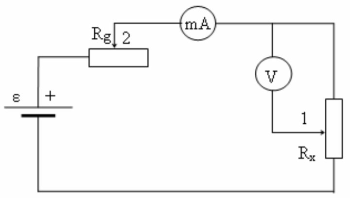

Darbo užduotis.
Nustatyti tiriamojo laidininko savitąją varžą ir patikrinti Omo dėsnį.
Teorinio pasirengimo klausimai.
Varža, savitoji varža, Omo dėsnis.
Teorinė dalis.
Laidininko aktyvioji (ominė) varža (toliau – varža) apibūdina šio laidininko pasipriešinimą pastoviosios elektros srovės tekėjimui. Kietojo laidininko varža R priklauso nuo jo medžiagos cheminės sudėties, kristalinės struktūros, matmenų, formos ir temperatūros. Ją gali pakeisti ir išoriniai poveikiai: deformuojančios laidininką jėgos ar įtempiai, magnetiniai laukai ir kt. Darbe nagrinėsime pastovaus skerspjūvio S, ilgio l, vienodos temperatūros vienalyčio laidininko varžą. Jo aktyviosios varžos didumą galima nustatyti išmatavus laidininku tekančios srovės stiprį I, esant tarp laidininko galų žinomam potencialų skirtumui $φ_{1} – φ_{2}$. Pagal Omo dėsnį nesant laidininke elektrovaros, t. y. vadinamajai vienalytei grandinės daliai, galioja lygybė: $$\begin{array}{cr} φ_{1} – φ_{2} = IR = U, & \quad (1) \end{array}$$ čia U – įtampa tarp grandinės (mūsų atveju – tarp laidininko) galų.
Iš čia $$\begin{array}{cr} I = \dfrac{U}{I}. & (2) \end{array} $$
Tačiau dažnai yra naudojamas kitas praktiškai svarbus laidininko varžą apibūdinantis, bet nuo jo išmatavimų ir geometrijos nepriklausantis dydis – savitoji varža ρ. Mūsų nagrinėtojo vienalyčio pastovaus skerspjūvio laidininko atveju $$\begin{array}{cr} ρ = \dfrac{R \cdot S}{l}. & (3) \end{array} $$
Savitoji varža mūsų atveju apibrėžiama kaip vienetinio ilgio ir vienetinio skerspjūvio ploto vienalyčio laidininko varža. Pagal valstybinį standartą (LST ISO 31-9) savitoji varža apibrėžiama kaip proporcingumo koeficientas Omo dėsnio diferencialine forma: $$\begin{array}{cr} \vec{E} = ρ\ \vec{j}; & (4) \end{array} $$ čia $\vec{E}$ – elektrinio lauko stipris laidininke; $\vec{j}$ – juo tekančios srovės tankis.
Darbo aprašas.
Darbe naudojamas įrenginys (1 pav.) susideda iš stendo su elektriniais matavimo prietaisais ir mechaninio stovo. Prie mechaninio stovo pritvirtinta milimetrinė liniuotė, slankiklis ir įtemptas laidas. Stende sumontuotas maitinimo šaltinis, srovės stiprio reguliatorius $R_{g}$, srovės per tiriamąjį laidą, kurio varža $R_{x}$, matuoklis – 1 pav. Darbe naudojamas įrenginys: 1, 2 – slankikliai; $R_{x}$ – laidininko varža; $R_{g}$ – srovės stiprio reguliatorius; V – voltmetras; mA – miliampermetras miliampermetras ir įtampos tarp slankiklio ir laido apatinio galo matuoklis – voltmetras.
Norint nustatyti laido savitąją varžą, reikia išmatuoti tarp laidininko galų tekančios srovės stiprį bei įtampą. Iš Omo dėsnio apskaičiuojama laido varža. Žinant varžą, laido ilgį bei skerspjūvio plotą galima apskaičiuoti savitąją varžą.
Darbo eiga:
1. Patikriname Omo dėsnį. Tam slankiklį 1 pakeliame į viršutinę padėtį ir keisdami slankikliu 2 srovės stiprį matuojame įtampą (5–7 matavimai). Matavimo rezultatus pateikiame lentelėje. Pasinaudodami Omo dėsniu (2), apskaičiuojame varžą ir rezultatus taip pat įrašome į lentelę.
| Matavimo numeris | 1 | 2 | 3 | 4 | 5 | 6 | 7 |
|---|---|---|---|---|---|---|---|
| Srovės stipris, mA | |||||||
| Įtampa, V | |||||||
| Varža, Ω |
Apskaičiuojame vidutinę laidininko varžą: $< R >= …… \textit{Ω}.$
Brėžiame srovės stiprio priklausomybės nuo įtampos grafiką. Kuo tiksliau gauta priklausomybė atitinka tiesinę, tuo geriau grandinei tinka Omo dėsnis.
2. Nustatome laidininko savitąją varžą. Tam išmatuojame laido skersmenį d mikrometru ir ilgį l nuo apačios iki slankiklio apatinės dalies ant stovo esančia milimetrine liniuote:
d =......... mm, l = ........ mm.
Laidininko skerspjūvio plotą apskaičiuojame pagal formulę: $$ S = π\ r^2 ;$$ čia r – laidininko spindulys.
Pagal (3) formulę apskaičiuojame laidininko savitąją varžą (skaičiuodami naudojame vidutinę varžos vertę): $$ ρ = \dfrac{< R >S}{l} $$
Pasinaudodami laidininkų savitųjų varžų lentele, esančia darbo aprašo priede, nustatome medžiagą, iš kurios pagamintas laidas.
3. Nustatome laidininko varžos priklausomybę nuo jo ilgio. Tam, nekeisdami srovės stiprio grandinėje, matuojame įtampą tarp laido pradžios ir slankiklio. Matavimą atliekame 5–7 kartus esant skirtingiems laido ilgiams (kiekvieno kito matavimo metu laido ilgį pakeičiame 4–7 cm). Matavimų rezultatus surašome į lentelę. Kiekvienam atvejui apskaičiuojame laido varžą
| Srovės stipris I = ...... mA | |||||||
|---|---|---|---|---|---|---|---|
| Laido ilgis, mm | |||||||
| Įtampa, V | |||||||
| Varža, Ω | |||||||
Brėžiame varžos priklausomybės nuo laido ilgio grafiką.
Kontroliniai klausimai
- Ką vadiname varža?
- Ką vadiname savitąja varža?
- Suformuluokite Omo dėsnį grandinės daliai.
- Kaip patikrinti, ar grandinės daliai taikytinas Omo dėsnis?
- Kodėl žinynuose pateikiamos įvairios cheminės sudėties laidininkų savitosios varžos, o ne varžų reikšmės?
- Ar keičiasi savitoji varža keičiant slankikliu tiriamojo laidininko ilgį?
| Laidininkas | Savitoji varža ρ, Ω⋅m |
|---|---|
| Aliuminis | $2.7 \cdot 10^{-8}$ |
| Volframas | $5.5 \cdot 10^{-8}$ |
| Geležis | $1.0 \cdot 10^{-7}$ |
| Auksas | $2.2 \cdot 10^{-8}$ |
| Varis | $1.72 \cdot 10^{-8}$ |
| Sidabras | $1.6 \cdot 10^{-8}$ |
| Platina | $1.07 \cdot 10^{-7}$ |
| Konstantanas | $5.0 \cdot 10^{-7}$ |
| Nichromas | $1.12 \cdot 10^{-6}$ |